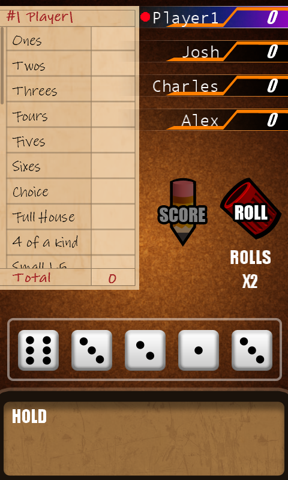

Yacht
Ported from Microsoft's XNA 4.0 Yacht game for Windows Phone.
Source for this sample on GitHub ↗

Play ▸Opens in a new tab. The first load prepares the browser for the game's timer thread. The browser supports the offline game; online play uses the separate native server.
About this sample
Roll and hold five dice to score combinations on a Yacht score card. Play the offline game against three opponents with the original Windows Phone artwork and sounds.
Controls
| Action | Control |
|---|---|
| Choose a menu item or button | Tap or click |
| Confirm the name prompt | Enter |
| Roll, hold dice and score | Tap or click the game board |